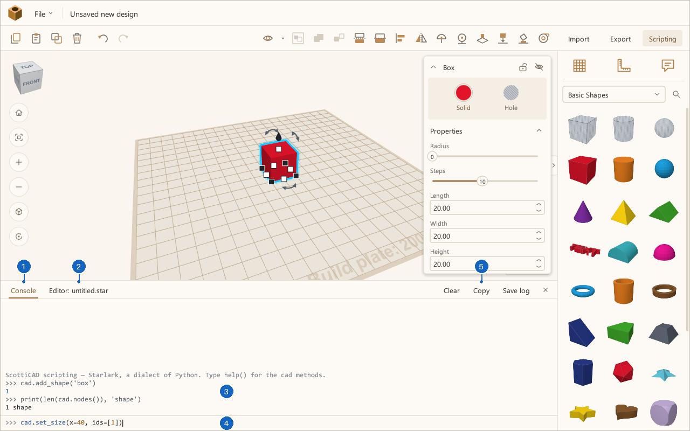
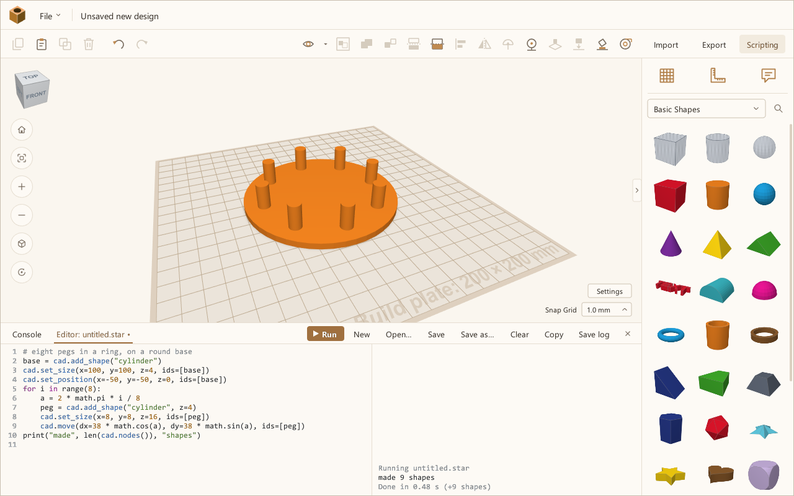

Chapter 11
Scripting
Anything you can do with the mouse you can also do with a few lines of code. A script is worth writing when a part has many similar features (forty holes in a grid), when it should come in several sizes, or when its shape follows from a calculation.
This chapter introduces the scripting console. The full list of commands is in the API reference, and the examples folder has over a dozen commented scripts to learn from.
The console
Click Scripting, at the top right, to open the console under the view.

- Console tab: type one command at a time.
- Editor tab: write and run whole scripts.
- The transcript: what you typed, what it printed, and any errors.
- The prompt. Type a command after
>>>and press Enter. - Clear, Copy and Save log act on the transcript.
Try it. Type each line and press Enter:
box = cad.add_shape("box")
cad.set_size(x=40, y=30, z=10, ids=[box])A box appears, then changes size. Type help() for the list of commands.
The language
Scripts are written in Starlark, a small dialect of Python. If you know some Python, you know it: variables, if, for, functions, lists and dictionaries all work the same way. There are no classes, no try/except and no import. The math functions are built in.
Everything goes through one object, cad. A few of its commands:
| Command | What it does |
|---|---|
cad.add_shape("box", x=0, y=0) | Adds a shape, centered on that point of the plate, and returns its id |
cad.set_size(x=40, ids=[a]) | Sets a shape's size |
cad.set_position(x=0, y=0, z=0, ids=[a]) | Puts a shape's corner at a point |
cad.move(dx=10, ids=[a]) | Moves a shape |
cad.rotate("z", 45, ids=[a]) | Turns a shape |
cad.set_param(a, "radius", 2) | Changes one of a shape's own settings |
cad.set_hole(True, ids=[a]) | Makes a shape a hole |
cad.group("union", ids=[a, b]) | Groups shapes and returns the group's id |
cad.set_color("#2a7fd4", ids=[a]) | Sets a colour |
cad.export("part.stl") | Exports the design |
Sizes and positions are in millimetres. Each shape has a short name for scripts, usually its name in the shape library in lower case without spaces: "cylinder", "roundroof", "spurgear". cad.shape_kinds() lists them all, with their settings.
Writing a script
Click the Editor tab. The editor is on the left and the transcript on the right.

# eight pegs in a ring, on a round base
base = cad.add_shape("cylinder")
cad.set_size(x=100, y=100, z=4, ids=[base])
cad.set_position(x=-50, y=-50, z=0, ids=[base])
for i in range(8):
a = 2 * math.pi * i / 8
peg = cad.add_shape("cylinder", z=4)
cad.set_size(x=8, y=8, z=16, ids=[peg])
cad.move(dx=38 * math.cos(a), dy=38 * math.sin(a), ids=[peg])
print("made", len(cad.nodes()), "shapes")| To | Do this |
|---|---|
| Run the script | Click Run, or press F5 or Ctrl+Enter |
| Stop a script that is taking too long | Click Stop, or press Ctrl+C |
| Save the script | Save, or Ctrl+S. Scripts are .star files |
| Open a script | Open…, or Ctrl+O |
| Start a new one | New |
Useful to know:
- A whole run is one step to undo. Press Ctrl+Z and everything the script made is gone, so you can change a number and run it again.
- Errors are links. When a script fails, the transcript shows the error and its line. Click it to jump to that line in the editor.
- Put the sizes at the top. Give the numbers that matter names (
HOLES = 8,RADIUS = 38) at the top of the script. Changing the part is then a matter of changing one line and pressing F5. - File → Run script… opens a script and runs it in one go.
What scripts can and can't reach
A script works on the design, and on nothing else. It can't read or write your files, use the network or start other programs. The only files it touches are the ones it names in cad commands that are for files: cad.open, cad.save, cad.export, cad.import_file and cad.screenshot.
Shapes that only scripts can make
Two shapes are made from lists of points, so they come from scripts rather than from the shape panel:
- An outline is a flat shape, drawn as a list of corner points, and raised to a height. Outlines drawn inside another are holes in it.
- A loft joins a stack of outlines at different heights into one solid: a vase, a funnel, a boat's hull.
# a plate with a rectangular window in it, 3 mm thick
plate = cad.add_outline([[(0, 0), (40, 0), (40, 25), (0, 25)],
[(15, 8), (25, 8), (25, 17), (15, 17)]], z0=0, z1=3)
# a vase: a hexagon at the base turning into circles higher up
def ring(r, n):
return [(r * math.cos(2 * math.pi * i / n), r * math.sin(2 * math.pi * i / n)) for i in range(n)]
vase = cad.add_loft([(0, ring(20, 6)), (40, ring(28, 48)), (80, ring(12, 48)), (95, ring(16, 48))])Once made, they behave like any other shape: you can move, resize, group and cut them with the mouse.
Driving ScottiCAD from Python
The same commands are available to ordinary Python programs running outside ScottiCAD, through the automation API. That suits batch jobs: making fifty name tags from a list, or exporting a part in every size.
from scotticad import launch
with launch(headless=True) as cad:
box = cad.add_shape("box")
cad.set_size(x=40, y=30, z=10, ids=[box])
cad.export("part.stl")The API reference describes how to set it up, and every command.